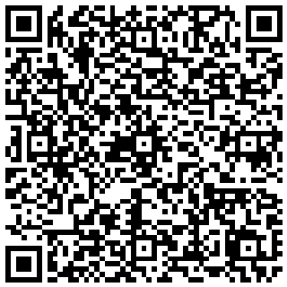

Párosítsd a telefont
Olvasd be a QR-t a Cybara appban — így bárhonnan, mobil interneten is elérsz

VNMX-LFKD
https://hegyis-mac-mini-1.tailf17963.ts.net
- 1Ellenőrizd, hogy a telefonon be van kapcsolva a Tailscale (zöld ikon).
- 2Nyisd meg a Cybara appot a telefonon.
- 3Az appban válaszd a párosítás / connect lehetőséget, és olvasd be ezt a QR-t.
- 4Ezután a telefonon mobil interneten is elérsz — akár Wi-Fi nélkül.
Hogyan működik? A Mac és a telefon egy Tailscale hálózatban vannak
(100.122.254.125 ↔ 100.107.155.78). A forgalom a Tailscale
saját titkosított csatornáján megy — nem a nyílt interneten, nem kell portot nyitni.
Fontos: a párosítási kód 10 percig érvényes, és egyszer használható. Ha lejár, generálj újat — szólj, és azonnal adok újat.